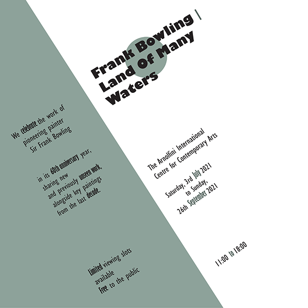
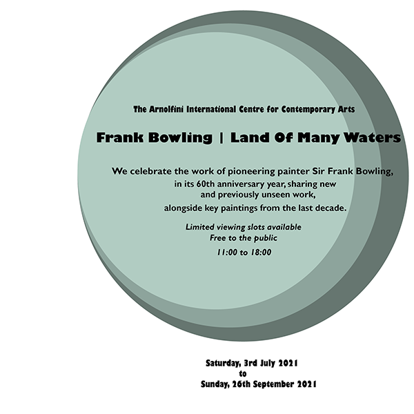
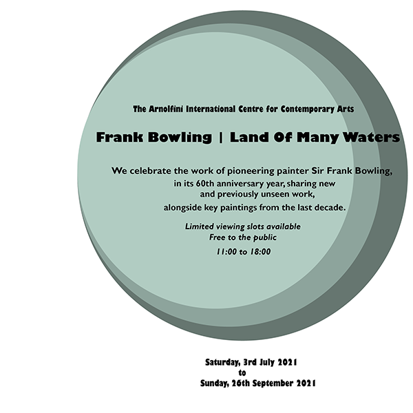

this is my type section bla bla bla
Axial
Bilateral
Dilatational
Grid
Modular
Radial
Random
Transitional
Typography is cool and all, but its real use is when it comes to life in posters. CUE THE CARP TASK!
Hi there! This is my very first website that I have ever completely coded by myself. Withinn this website, you will find other projects that I've worked on throughout this first semester. I will showcase a couple of poster designs, different types of typography, and much more. Having no expierence of coding before coming to this class, I feel very proud to showcase my work to everyone! Without further adue, here are multiple examples of different types of typography.
Axial
Bilateral
Dilatational
Grid
Modular
Radial
Random
Transitional
Typography is cool and all, but its real use is when it comes to life in posters. CUE THE CARP TASK!
1 paragraph explaining what i did
middle design will be the chosen one i improved. write 1 paragraph explaination
1 paragraph explaining what i did
Making websites is cool and all, but as an inexpierienced coder, I had to start from ground zero. This next section will show worksheets that helped me develop the skills to make this very website.
This is the section where I will explain my choices with the coding worksheets, and add a link towards them below this paragraph.
examples of work from the worksheet
Create a short essay (approx. 2 paragraphs), that explains the strategy and scope of your website. It will include who you think your users are. It will also include a basic list of the content that you will be including (and not including) in your website as well as the functional goals for your html website.
overall, my feelings towards this project could be compared to going on a rollarcoaster.